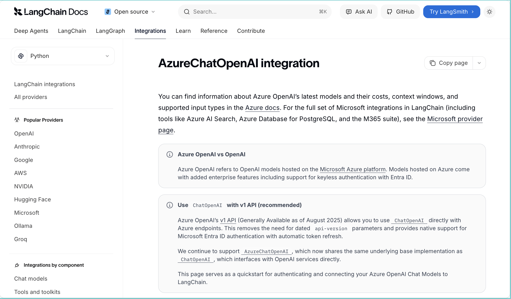
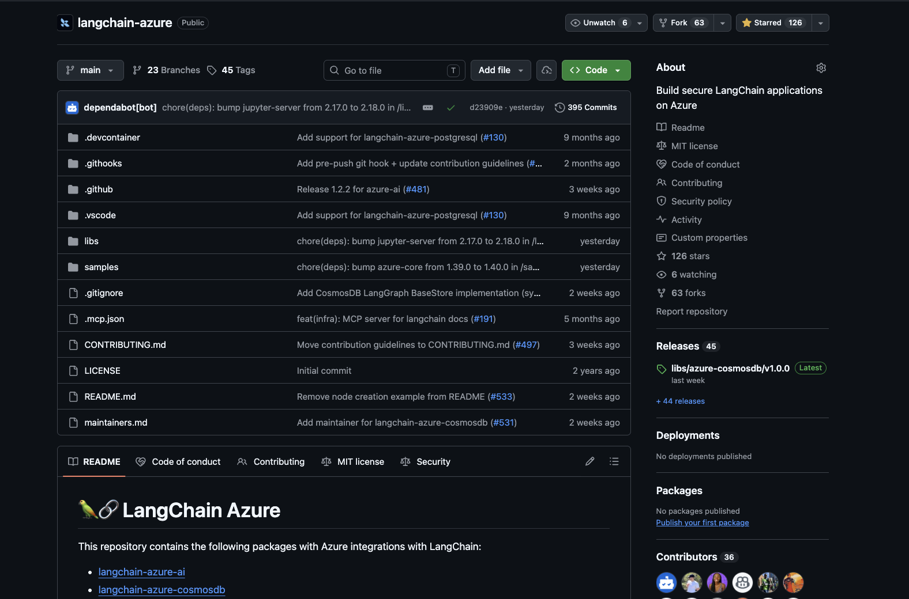
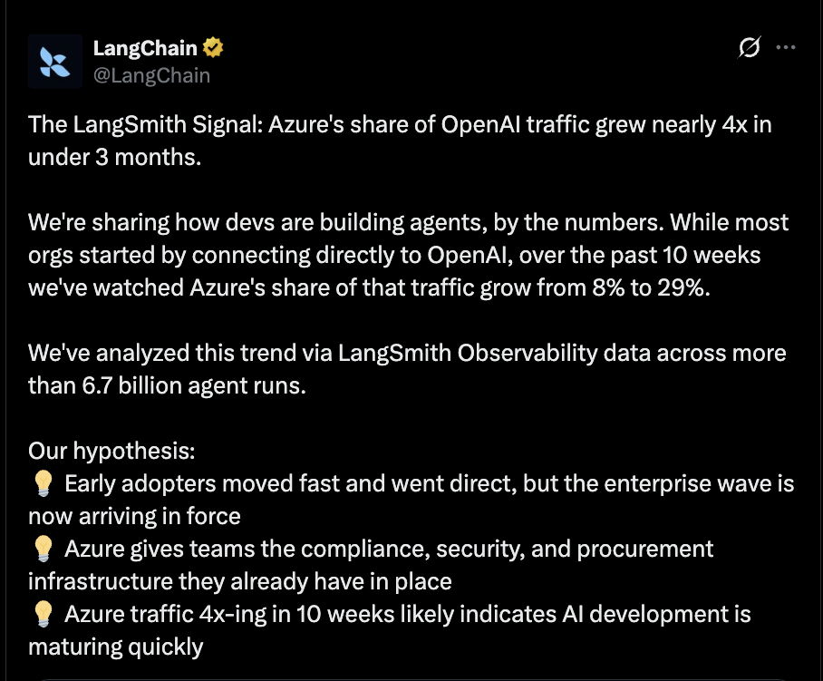
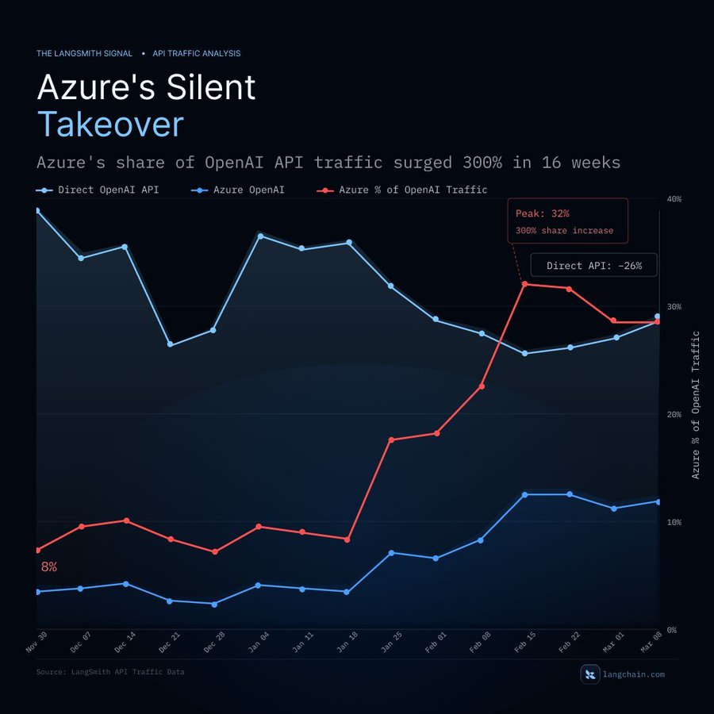

Marlene Mhangami · Senior Developer Advocate · Microsoft
LangChain Azure maintainer


Meet developers where they already are


Goal: support every developer building AI on Azure and Microsoft Foundry, wherever they are.
In one sentence:
LangChain is a framework in Python and JavaScript that makes it easy for developers to build AI-powered applications.
create_agent — a proven ReAct pattern on LangGraph's durable runtimeToday we'll focus on building effective agents with LangChain.
Intercom's customer-support agent — resolves millions of tickets autonomously.
Internal AI assistants — recruiter copilots, learning, code search.
Generative AI for elite law firms — research, drafting, due diligence.
Production-grade agents, on top of the same primitives we'll use today.
Taking your agents from local to production.
A widely accepted definition today:
An AI Agent is an LLM that calls tools in a loop to achieve a goal.
Walking through the journey, using our demo agent Ada.
import os
from langchain.agents import create_agent
from langchain_openai import ChatOpenAI
PROJECT_ENDPOINT = os.environ["AZURE_AI_PROJECT_ENDPOINT"]
API_KEY = os.environ["AZURE_AI_API_KEY"]
llm = ChatOpenAI(
base_url=f"{PROJECT_ENDPOINT.rstrip('/')}/openai/v1",
api_key=API_KEY,
model="gpt-5-mini",
use_responses_api=True,
streaming=True,
)
ada_agent = create_agent(
model=llm,
system_prompt=SYSTEM_PROMPT,
)
Install the deps first: pip install langchain-openai
Define your agent's tools — MCP servers, Azure AI Search, file search, code interpreter, OpenAPI actions — once in Foundry, and expose them through a single MCP-compatible endpoint any agent can consume.
No per-tool SDKs, no scattered credentials — agents connect to a single MCP endpoint.
Foundry handles credential injection, token refresh, and enterprise policy at runtime.
Curate tools once in the portal — every agent and team can discover and reuse them.
LangChain middleware that wraps each agent step with the Azure AI Content Safety API — screening user input and model output before anything leaves the loop.
Scans messages for hate, violence, sexual content, and self-harm.
You set the bar per category — block, redact, or just log.
create_agent(model, tools, middleware=[content_safety])
Run your agent against test data in the Foundry portal and score outputs with built-in or custom evaluators. Validate behavior pre-deployment, then monitor it in production.
Groundedness, relevance, coherence, fluency — AI-assisted scoring with GPT.
Detect hate, violence, sexual, self-harm, jailbreak attempts and protected material.
Evaluate full conversations, model deployments, or pre-generated outputs.